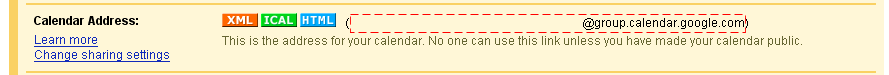

JavaScript is required to use ALARMd, the Internet Alarm Clock. Instead of actually using it without JavaScript, you can go ahead and
read about what fun
you could be having if you had JavaScript turned on.
ALARMd
.com
by
zachleat
Readme
Naked
:
:
.
LMT
π
/180
Go to Calendar Settings for the Calendar you want to use.
Make sure your Calendar is Public under the "Share this calendar" tab.
Find your Calendar ID (The red dotted box shown below) 
Alarm Dates and Times
Alarm Types
Single Easy Alarm
Google Calendar
Single Easy Alarm
Help
Google Calendar ID
First Event of the Day Only
Within
Days
Adjust
Minutes Before Event
Sources
Default Alarm
Rage Against the Machine: Wake Up
Technotronic: Get Up
Andy McKee: For My Father
Last.fm Tag: Indie
Last.fm Tag: Rock
Pandora Radio
Generic Train Crossing
Voco Clock Butler (voco.uk.com)
Delete
Add New Alarm
URL
Youtube ID
Last.fm Tag
Last.fm User
Label (Optional)
Add
Cancel
Repeat (YouTube and MP3 Only, Requires Restart)
Clock Format
Count Down (Alarm Required)
Main Clock Format
Standard
Readable
Unix
Metric
Unit Circle
24 Hour
Seconds
Customize
Skin
(None)
Red Clock
Blue Clock
Green Clock
Your Own Skin Url (CSS)
Save Options
Options
Test